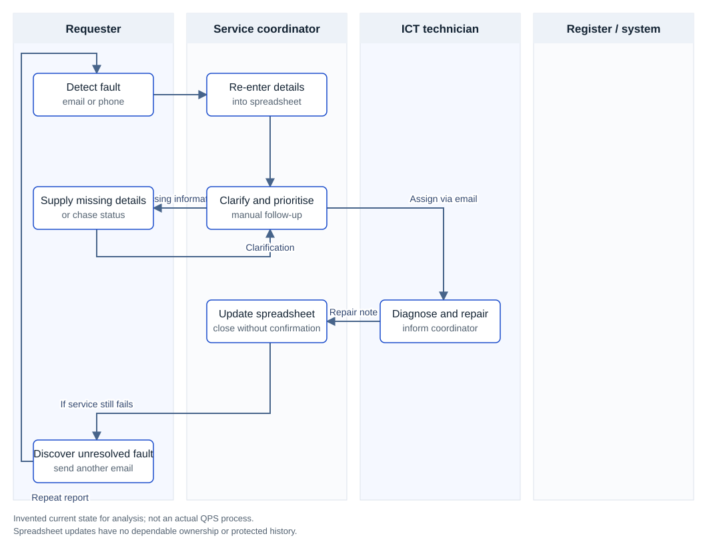
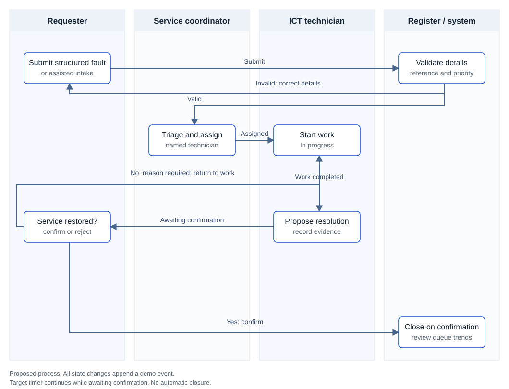

Stakeholders and problem analysis
Problem statement: fragmented fault intake and unconfirmed closure create avoidable administration and uncertain service restoration. The proposed service gives staff one visible request, a named owner and a confirmed outcome.
Scope: routine device, access, application and network faults in three fictional licensing support units. Exclusions: weapons licensing decisions, applicant records, exhibits, emergency response, security incident handling, live integrations, procurement and real staff data. Security or safety incidents must use authorised agency channels rather than this proposed routine workflow.
All seven stakeholder groups, six findings and the 50-fault baseline are simulated. In a real engagement, obtain informed participation, validate notes, invite dissent and triangulate interviews with observation and service data before baselining requirements.
Stakeholder map and engagement plan
Interview questions
- Walk me through your most recent fault, from detection to confirmation of recovery.
- Where do you wait, repeat information or ask another person for an update?
- What would make a fault urgent, and what workaround is available?
- Who owns each hand-off, and how do you know it has been accepted?
- What evidence is needed before closing or reopening a fault?
- What information is essential, restricted or unnecessary for this process?
- Which accessibility, shift, location or confidence barriers affect reporting?
- Which policy, integration and supplier constraints must we validate?
- What measure would convince you the new process is better?
Simulated interview findings
Success measures
The baseline below is an invented four-week sample of 50 faults, separate from the eight seeded prototype records. Targets are hypotheses to validate in a comparable four-week pilot. No operational benefits have been measured.
Assumptions and validation backlog
- A01: 50 routine faults per month and 12 minutes active handling per fault. Validate through a time-and-motion baseline; do not include technician repair time.
- A02: staff have an approved device and platform access. Confirm with the platform owner and include an assisted channel.
- A03: a business owner can define priorities and organise requester confirmation. Validate with all shifts and the coordinator.
- A04: existing approved service tooling may meet the need. Assess before building or procuring another platform.
- A05: policies, retention rules, real data classification and supplier arrangements are unknown. Obtain authoritative agency decisions before a pilot.
Current and future process analysis
These simplified swimlanes show responsibilities and hand-offs; they are not asserted to be BPMN 2.0 compliant or to describe actual QPS processes. Open the SVG for a larger view, or edit the diagrams.net source.
Current state

Proposed future state

Gap analysis
Priority definitions and timing are proposed business rules. High impact means multiple staff blocked; High urgency means no practical workaround. P1 = both High (4 elapsed hours); P2 = either High (24 hours); P3 = neither High (72 hours). The timer does not pause for confirmation. Capacity and escalation arrangements need sponsor validation.
Business requirements and traceability
BRD purpose: define a testable service workflow for the fictional problem. Baseline version 1.0 is ready for portfolio review; business approval is not claimed. Must for pilot controls remain mandatory gates even though this prototype does not implement them.
Business outcomes and solution boundary
Reduce handling and chasing, improve submission quality and verify restoration. The working prototype is static HTML, CSS and JavaScript with a browser-local dataset. It demonstrates service behaviour, not production identity, protected audit, cross-device persistence or a deployed Microsoft 365 solution.
R01 · Must · FunctionalAs a requester, I want to submit a structured fault so that the coordinator has enough information to act.
Acceptance criteria: Given a new request, when title (5–120 characters), unit, category, impact, urgency and description (10–1000 characters) are valid, create a unique sequential reference and Submitted event. Reject blank or out-of-range values without saving.
Implemented in demo · Gap G01 · Tests T01, T02, T03
R02 · Must · FunctionalAs a coordinator, I want to assign a technician so that each accepted fault has an accountable owner.
Acceptance criteria: Given a Submitted fault and the Coordinator demo role, assigning a named technician moves it to Assigned and appends an event. Reject an empty technician or another role. Reassignment after submission is outside this prototype.
Implemented in demo · Gap G02 · Tests T04, T05
R03 · Must · FunctionalAs a technician, I want controlled state changes so that progress is meaningful and consistent.
Acceptance criteria: Only Assigned → In progress and In progress → Awaiting confirmation are permitted for the Technician demo role. Skip transitions are rejected without mutation.
Implemented in demo · Gap G02 · Tests T06, T07
R04 · Must · Business ruleAs a coordinator, I want consistent priority rules so that faults are treated fairly.
Acceptance criteria: High impact and High urgency gives P1 with 4 elapsed hours; either High gives P2 with 24 hours; otherwise P3 with 72 hours. Due time is created time plus the target and never pauses while awaiting confirmation. These are proposed targets, not QPS SLAs.
Implemented in demo · Gap G03 · Tests T08
R05 · Must · FunctionalAs a technician, I want to record what restored service so that the requester can verify the result.
Acceptance criteria: Resolution requires 10–1000 characters and an In progress fault. Saving moves it to Awaiting confirmation with an event; a shorter note is rejected.
Implemented in demo · Gap G04 · Tests T09
R06 · Must · FunctionalAs a requester, I want to confirm or reject a resolution so that a fault closes only when service works.
Acceptance criteria: Only the Requester demo role can act on Awaiting confirmation. Confirming closes the fault and records closedAt. Rejecting with a reason of 10–1000 characters returns it to In progress, preserves prior events and clears closedAt. No automatic closure.
Implemented in demo; identity enforcement deferred · Gap G04 · Tests T10, T11
R07 · Must · ControlAs a reviewer, I want a time-stamped event history so that hand-offs are explainable.
Acceptance criteria: Every successful creation and transition appends actor role, event, state and timestamp. Failed actions append nothing. The demo history is locally mutable; a production release needs server-managed identity and tamper-resistant records.
Demo history implemented; production assurance deferred · Gap G05 · Tests T12
R08 · Should · FunctionalAs a coordinator, I want a filtered CSV export so that I can review the same queue outside the app.
Acceptance criteria: Export exactly the filtered records with headers; quote commas, quotes and line breaks; prefix formula-like cells to prevent spreadsheet execution. Display fictional-data and local-storage notices.
Implemented in demo · Gap G05 · Tests T13
R09 · Should · FunctionalAs a manager, I want workload and completion measures so that I can identify pressure and trends.
Acceptance criteria: Display all-record counts for open, overdue, awaiting confirmation and closed faults. Open means every state except Closed; overdue is open and dueAt < demo clock. Search covers reference, title, unit and owner; status filters combine with search.
Implemented in demo · Gap G06 · Tests T14, T15
R10 · Must · QualityAs a staff member, I want a usable and inclusive service so that reporting does not depend on device or digital confidence.
Acceptance criteria: Provide labelled fields, keyboard-operable dialogs, visible focus, text status labels, a narrow-screen layout and an assisted-intake SOP. Conduct representative assistive-technology and user testing before release; full WCAG conformance is not claimed.
Basic UI checks executed; user validation deferred · Gap G01 · Tests T16, U01
R11 · Must for pilot · Security and privacyAs a security and privacy adviser, I want enforced access and assessed data handling so that operational information is protected.
Acceptance criteria: Before pilot, approve classification, privacy assessment, data location and supplier review; enforce SSO and server-side least privilege including ownership; test cross-user denial, logs and breach response. Role switching is only a demo convenience.
Production release gate; not implemented · Gap G07 · Tests U02
R12 · Must for pilot · Records and operationsAs a records and platform owner, I want approved lifecycle and support controls so that records remain usable and service is recoverable.
Acceptance criteria: Before pilot, approve the applicable retention schedule without inventing a period; test restore, record export, support ownership, incident runbook and controlled deployment rollback. Keep requirements, decisions and releases versioned.
Production release gate; not implemented · Gap G07 · Tests U03
Data dictionary
Requirements traceability matrix
Download traceability CSV
Microsoft 365 implementation blueprint
First assess the approved service management platform. If it cannot meet the need, test a low-code alternative in an approved tenant: Power Apps for intake, SharePoint or Microsoft Lists for the request register, a separate event list for state history, Power Automate for controlled notifications and escalation, and Power BI for trends. No tenant configuration or licensing has been performed in this portfolio.
- Design Request and RequestEvent lists with stable IDs, controlled choice columns, UTC timestamps and indexed filter fields; confirm delegation and realistic list volumes.
- Use agency SSO and group-based permissions; implement requester and assigned-technician restrictions in the data/service layer. Hiding controls in Power Apps is insufficient.
- Make state transitions server-validated and protect the event repository from end-user modification; use concurrency checks and idempotent flows to prevent duplicate events.
- Configure retention and record capture with the records owner; do not assume a SharePoint version history is sufficient. Validate tenant location, connector paths and supplier terms.
- Test notification failures, flow retries, backup/restore, operational support and licensing before pilot. The web demo does not send email or run automatic escalation.
Governance risk and compliance
This is a control mapping and validation plan, not a compliance certification or legal interpretation. The current public sources were reviewed on 9 October 2026. Agency owners must confirm applicability and internal policy requirements.
Risk register
Likelihood and impact use 1–5 scales. Score = likelihood × impact; Low 1–4, Medium 5–9, High 10–25. Ratings are scenario estimates, not agency assessments. Residual High risks K02 and K07 remain unacceptable for production and are explicit release gates.
Document control
Version and change practice
Keep requirements, maps, decisions, source and test evidence in version control. A change request records problem, affected requirement IDs, benefit, risk, owner and acceptance impact. Assess it with the process owner, update traceability and tests, then baseline a reviewed release. Operational records require their own approved records repository; source control is not a substitute.
Decision log
Testing implementation and review
Test plan: run a fresh synthetic dataset through submission, assignment, repair, rejection and closure. Check invalid inputs, role restrictions, event preservation, target calculations and export. Prototype results below were executed by the project author, not independent business users. They do not constitute organisational UAT.
Entry criteria: agreed requirements, versioned build and reproducible seed data. Pilot exit criteria: all Must and Must for pilot requirements passed in the target environment, zero Severity 1 (service/security failure) or Severity 2 (critical task blocked) defects, accessibility issues resolved and documented sponsor acceptance. Lesser defects need an owner and due date.
Executed prototype checks
Download test cases with steps and expected results · Download machine-readable results
Business UAT and production gates
Change communications and rollout
Training and support
Use a 20-minute hands-on session for each role: requesters submit and confirm; coordinators triage and assist; technicians record evidence and handle rejection. Provide a one-page illustrated guide, captioned recording, shift-friendly repeats and named champions. Publish safe escalation channels and support hours agreed with the platform owner.
Cutover and rollback
Before cutover, reconcile open faults to unique references, assign owners, test access and restore, publish support details and stop dual entry. Keep the prior approved register available read-only. If access failures block critical work, a serious privacy/security event occurs or records cannot be recovered, the process owner pauses intake, returns to the approved fallback channel, reconciles changes and seeks sponsor authority before restarting. Never roll back by deleting operational records.
Post implementation review plan
No operational implementation or PIR has occurred. At the end of the proposed four-week pilot, compare M01–M05 with an agreed like-for-like baseline, segment by priority and assisted intake, inspect outliers and reopen causes, and report adoption and unresolved control issues. The sponsor decides expand, refine or stop at week 8. A 30/60/90-day benefits review follows only if rollout proceeds.
Continuous improvement and working agreement
Maintain an improvement backlog linking feedback to gaps and requirements. Hold a weekly retrospective, rotate demonstrations, invite respectful challenge and record decisions without blame. Include all shifts and accessibility needs, share documentation, manage workload fairly and use safe channels for sensitive concerns. These are proposed team practices, not claims of previous employment performance.
Advice to management
To: fictional Unit Manager. From: portfolio project author. Date: 9 October 2026. Decision sought: approve a short discovery and controlled pilot design, subject to platform, privacy, security and records assurance. This is a simulated briefing, not a real funding request.
Recommendation
Assess the existing approved service platform first. Configure it if it meets the requirements. If it does not, design a limited Microsoft 365 pilot in an approved tenant after R11 and R12 pass. Use the current web application only to validate workflow and requirements; it is not a production deployment recommendation.
Issue and evidence
The fictional unit handles faults across emails and spreadsheets, with duplicated handling, unclear ownership and closure without requester confirmation. Six simulated findings and a synthetic sample of 50 faults support the design exercise. Actual service data and stakeholder validation are required before investment decisions.
Options appraisal
Benefits and indicative effort
At 50 faults per month, reducing active administrative handling from 12 to 6 minutes would release 50 × 6 / 60 = 5 staff hours per month. At an assumed loaded rate of A$65 per hour, this represents A$325 per month or A$3,900 per year in potential capacity value, not cash savings. At 25–100 faults per month, the same assumption gives 2.5–10 hours per month. The synthetic baseline does not establish demand or a return on investment.
Allow an indicative 8–12 person-days for discovery, configuration, assessment, testing and training, before licensing, integration or remediation. At the same assumed rate and 7.6-hour day this is A$3,952–A$5,928 in effort. This is an estimate for comparison, not a quote; benefit alone does not yet justify custom development.
Risks conditions and next decision
Primary risks are improper access, uncontrolled records, adoption failure and misleading priorities. Confirm platform fit, classification, privacy, retention, support and access denial before any live pilot. Residual High risks for demo access and storage remain unaccepted for production. Measure completeness, handling, chasing, confirmation and service guardrails during the pilot. Expand only after a documented sponsor review; stop or revise if safety, security, accessibility or service quality deteriorates.
Download the two-page management briefing
Recruiter walkthrough and capability mapping
A five-minute walkthrough
All nine role capabilities
STAR answer for this portfolio exercise
Situation: “For an independent portfolio exercise, I modelled a fictional licensing support unit where IT faults were handled across email and a spreadsheet.” Task: “I set out to demonstrate an end-to-end BA approach to reducing administrative effort and improving confirmed restoration.” Action: “I created simulated stakeholder findings, mapped the hand-offs, traced gaps into testable requirements, built the workflow and documented the assurance and change gates.” Result: “I delivered a working prototype and executed domain checks. The benefit targets remain hypotheses; a real pilot would validate them.”
Team leader behaviour without invented experience
The supplied role identifies the Team leader stream. Use the decision log to explain how you would lead a project without direct reports: agree outcomes, invite challenge, communicate trade-offs, support learning, manage risks and hold decision owners accountable. Pair this exercise with truthful examples from your own work when addressing previous performance.
Application context
The supplied role description is Business Analyst AO5, Weapons Licensing Group, Legal Division, Brisbane, QLD/702780/26. It lists Tuesday 13 October 2026 as the closing date and seeks strong change management, process mapping and Microsoft Suite experience. The role document and applicant guide request a statement of no more than two A4 pages and a current CV. Treat the portfolio as supporting evidence; the written statement needs genuine previous-performance examples. These application details are taken from the supplied documents and have not been reverified against a live advertisement.
Sources assumptions and downloads
Public framework references were checked on 9 October 2026. The attached recruitment documents were used as source material for role alignment, not as instructions to carry out application actions. No application, email or stakeholder communication has been submitted.
S01 · QGEA policy catalogue
Official framework catalogue; confirm applicability at design gate
S02 · Information and cyber security policy IS18
Current v10.0.0; effective June 2026; checked 9 October 2026
S03 · OIC privacy reform information
QPP reforms commenced 1 July 2025; checked 9 October 2026
S04 · OIC privacy impact assessments
Current privacy assessment guidance; checked 9 October 2026
S05 · Public Records Act 2023
Official Queensland legislation; current version checked 9 October 2026
S06 · QPS Digital Service Standard
Official QPS customer experience context; checked 9 October 2026
Supplied role documents
702780-26-Role Description.docx and 702780-26-Applicant Guide non-Police.docx, supplied by the applicant. Original files and contact details are not copied into the hosted portfolio.
Download and reuse
- Portfolio pack: summary, discovery, maps, requirements, controls, testing, change, management advice and interview material.
- Editable draw.io maps and SVG exports; CSV traceability, risk, gap and UAT registers; Markdown evidence source and prototype source.
- All names, units, operational scenarios, interview findings and baseline figures are fictional. No QPS logo, approval or affiliation is claimed.